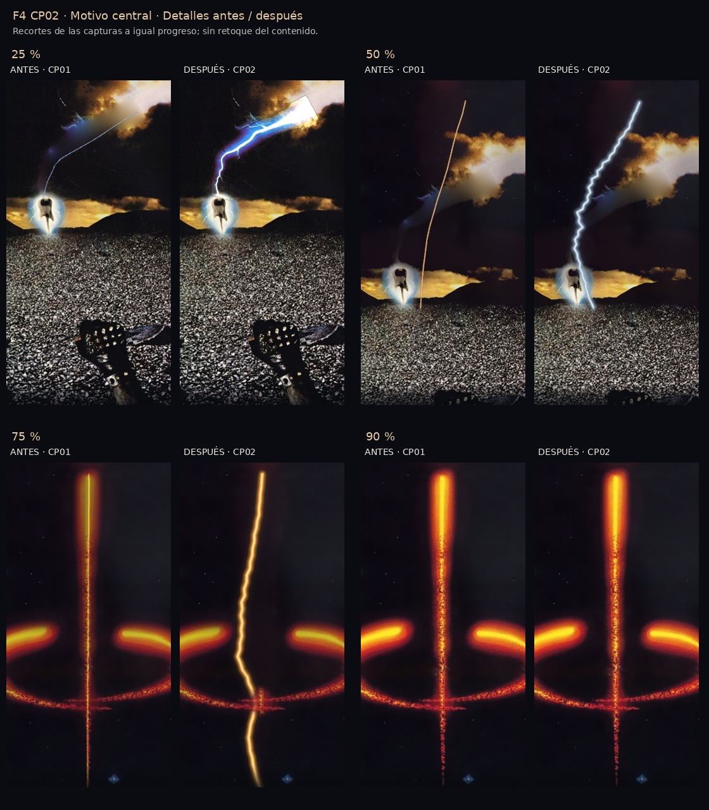
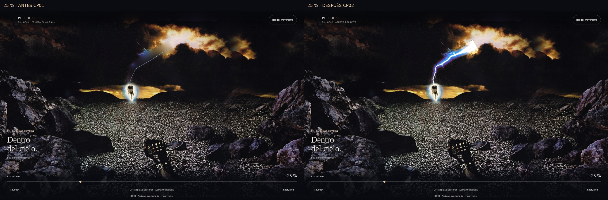
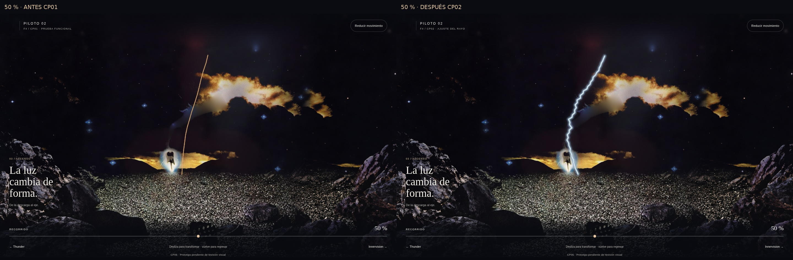
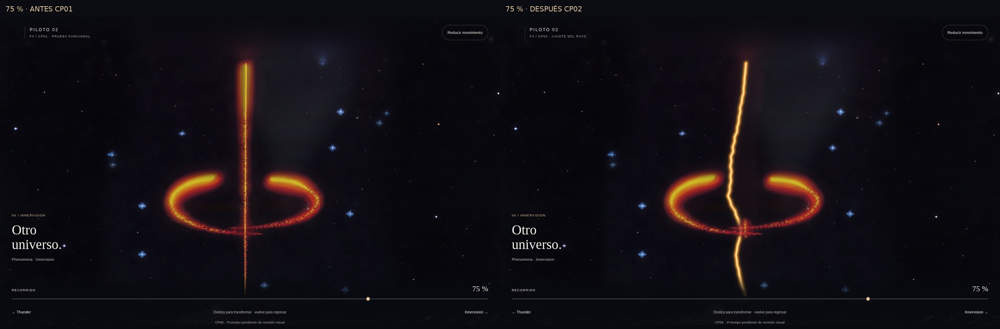
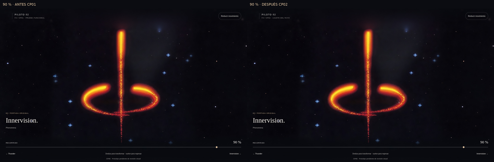
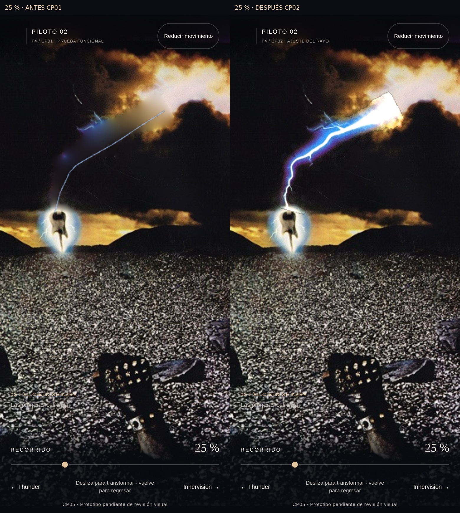
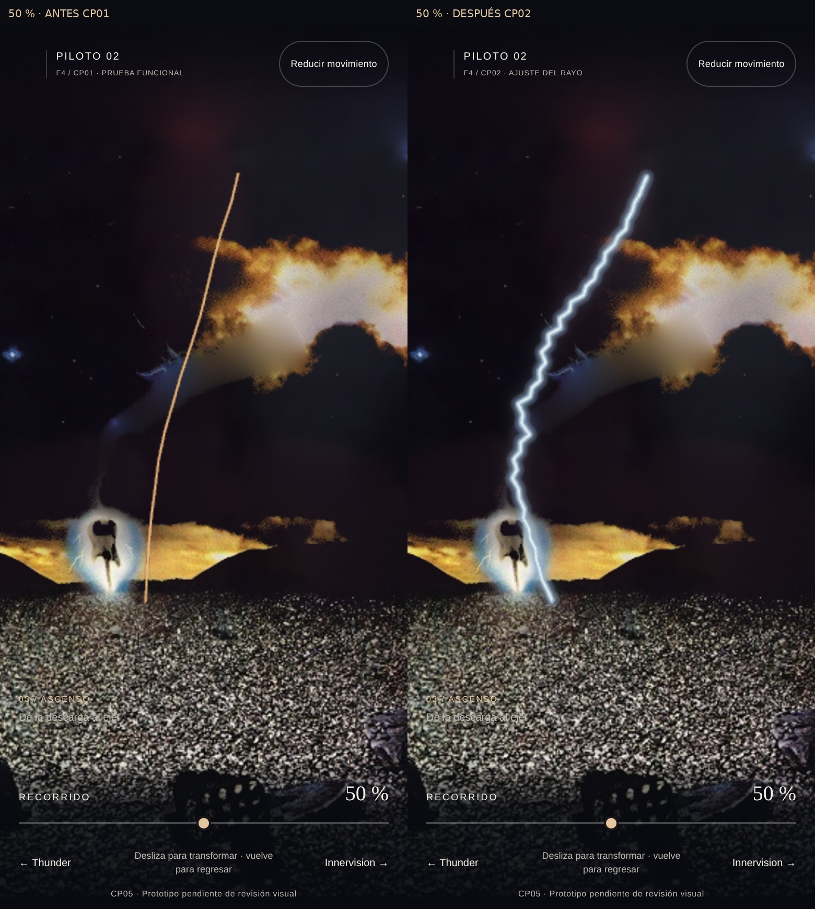
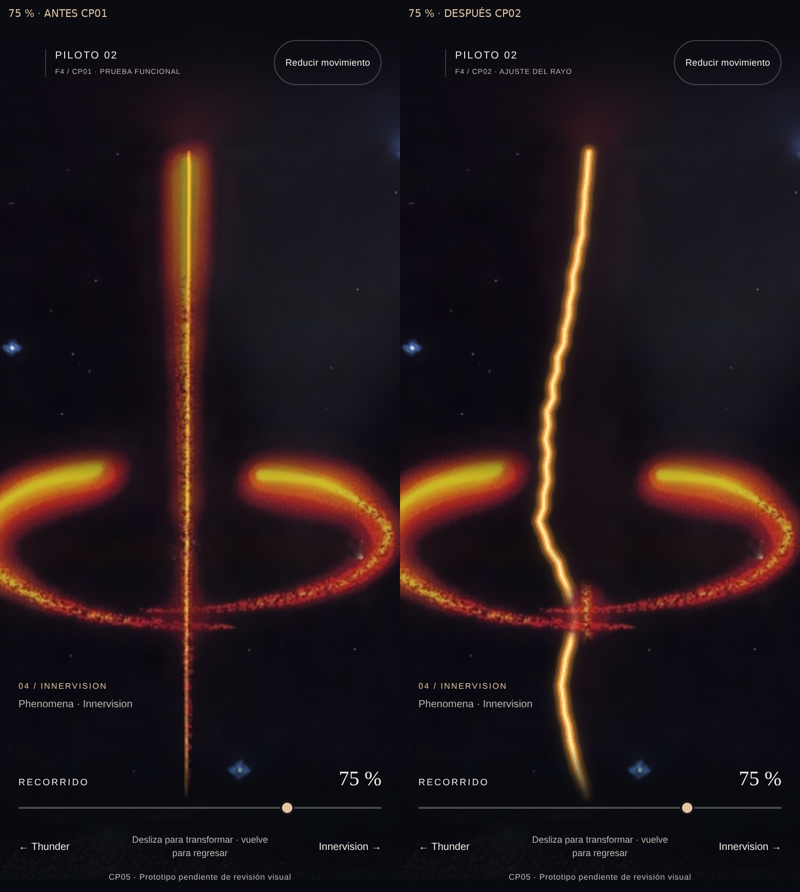
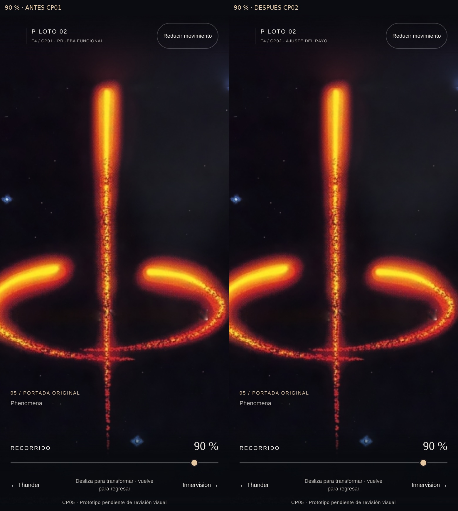

F4 CP02 v1.1 · Motivo central
Propuesta puntual para revisión. Rayo original al inicio, curvatura en el tramo medio y enderezamiento 62–90 %. No se declara aprobado el ajuste.
Informe breve · 47 comprobaciones dirigidas · Regresión consolidada
Movimiento sincronizado
Captura real de dos runtimes con el mismo scroll. Izquierda CP01, derecha CP02. La cadencia de captura por software no certifica FPS de hardware.
Detalle del motivo

Capturas completas de escritorio y móvil
escritorio · 25 % · Antes izquierda / Después derecha
escritorio · 50 % · Antes izquierda / Después derecha
escritorio · 75 % · Antes izquierda / Después derecha
escritorio · 90 % · Antes izquierda / Después derecha
movil · 25 % · Antes izquierda / Después derecha
movil · 50 % · Antes izquierda / Después derecha
movil · 75 % · Antes izquierda / Después derecha
movil · 90 % · Antes izquierda / Después derecha